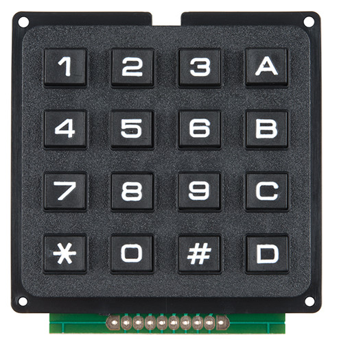
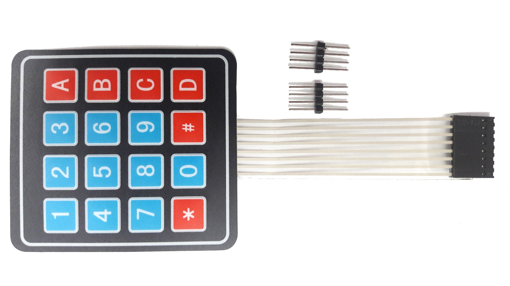
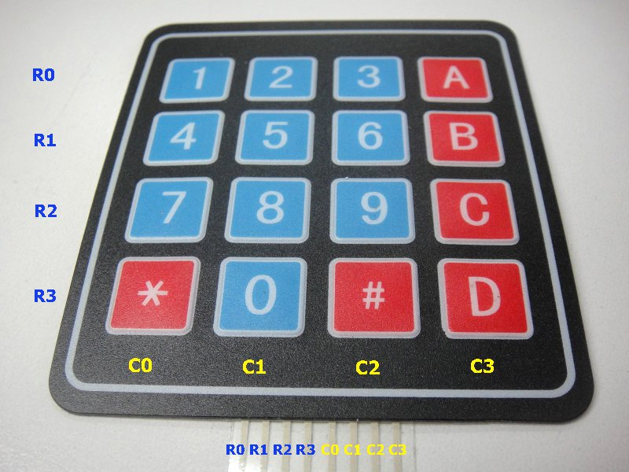
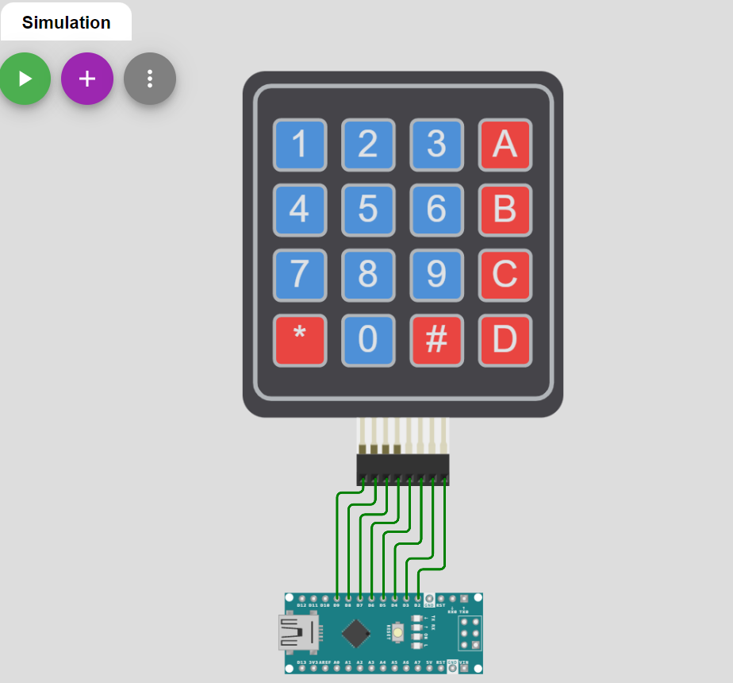
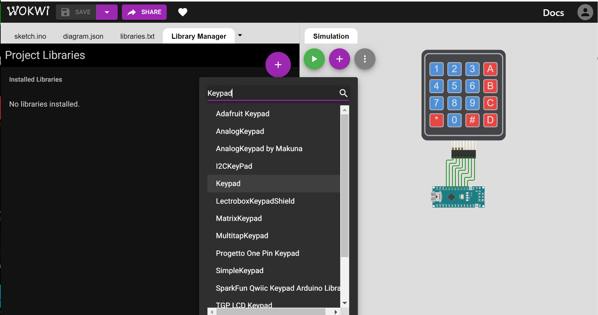
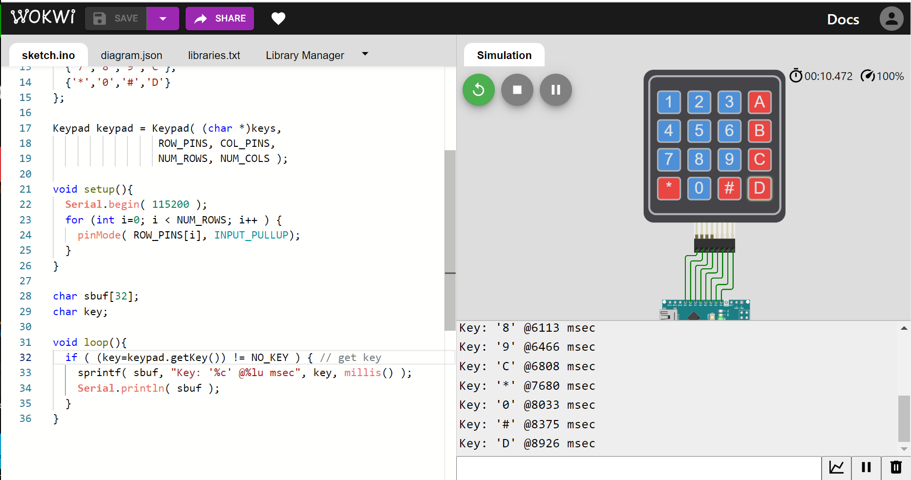
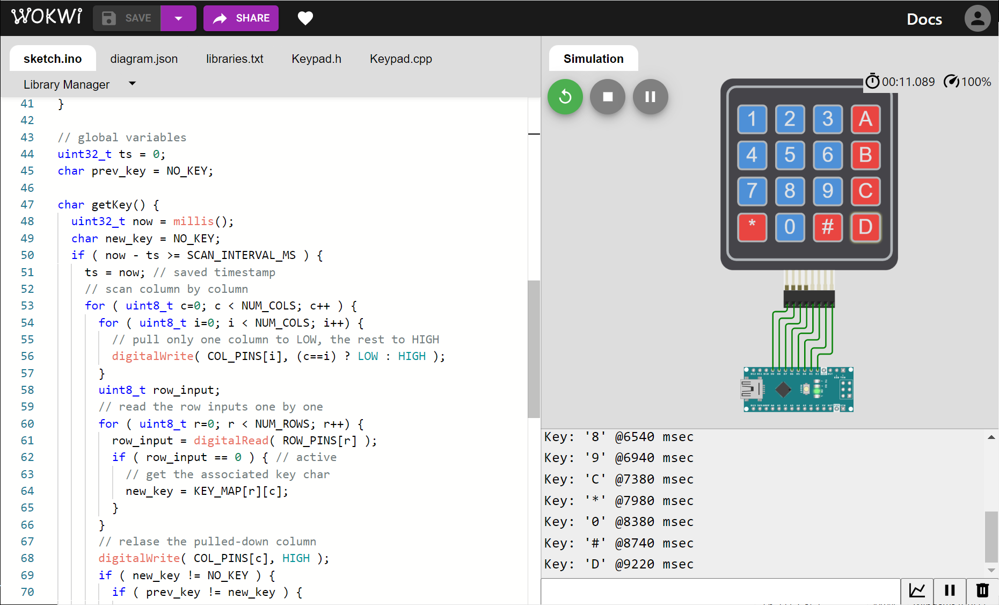
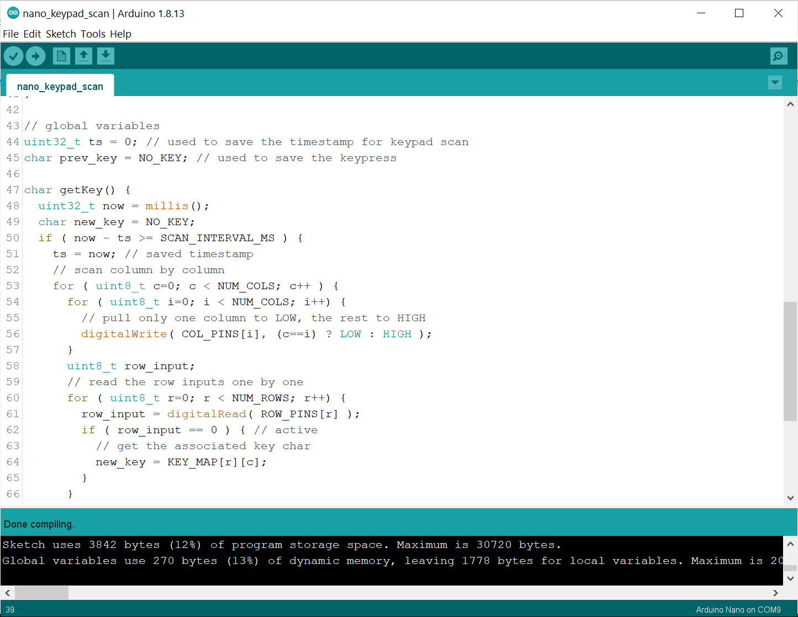
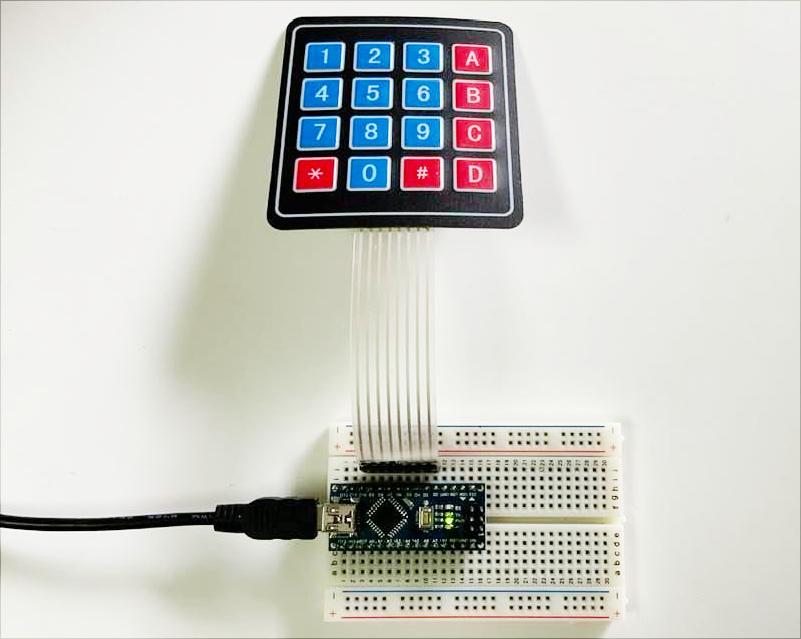

ตัวอย่างการสร้างคลาส C++ เพื่อใช้งานสำหรับ Arduino: 4x4 Keypad#
Keywords: Arduino, AVR, Object-Oriented Programming, User-defined C++ Class, 4x4 Keypad, Membrane Keypad
▷ การตรวจสอบสถานะปุ่มกด: Keypad Scan#
บทความนี้กล่าวถึงตัวอย่างการสร้างคลาสในภาษา C++ สำหรับใช้งานร่วมกับ Arduino เพื่อนำมาใช้ในการตรวจสอบดูว่า มีการกดปุ่มคีย์ (Keypass) บนโมดูลที่มีลักษณะเป็นแผ่นปุ่มกดขนาด 4x4 ในรูปแบบที่เรียกว่า Membrane Keypad และมีข้อดีคือ มีความทนทาน กันน้ำกันฝุ่นได้ดี และผู้ใช้จะสามารถกดปุ่มได้เพียงครั้งละหนึ่งปุ่มเท่านั้น ซึ่งมีความแตกต่างจากแป้นคีย์ที่เป็นปุ่มกดแบบ Tactile / Mechanical Keypad โดยทั่วไป

รูป: ตัวอย่างโมดูล Mechanical 4x4 Keypad (Alphanumeric) สำหรับการเปรียบเทียบ (Source: Sparkfun)

รูป: ตัวอย่างโมดูล 4x4 Membrane Keypad ที่ได้นำมาทดลองใช้งาน พร้อม Male Pin Headers แบบขายาว สำหรับการแปลงคอนเนกเตอร์แบบตัวเมียให้เป็นตัวผู้ (Female-to-Male)
ขาสัญญาณ I/O ของโมดูล 4x4 Membrane Keypad มี 8 ขา แบ่งเป็น 4 ขา สำหรับขาสัญญาณในแต่ละแถวแนวนอน
(Rows: R0..R3) และขาสำหรับสัญญาณในแต่ละแถวแนวตั้งหรือคอลัมน์ (Columns: C0..C3)
หากดูรูปตัวอย่างของโมดูล จะเห็นว่า ตำแหน่ง R0C0 ก็คือ ปุ่ม '1' เรียงไปตามลำดับจนถึง R3C3 ซึ่งก็คือ ปุ่ม 'D'

รูป: ขาสัญญาณ I/O ของโมดูล 4x4 Membrane Keypad
การสแกนแป้นปุ่มกด (Keypad) ก็คือ การตรวจสอบว่า มีการกดปุ่มใด ๆ หรือไม่ โดยจะทำไปทีละแถวในแนวนอน หรือแนวตั้งก็ได้ โดยเลือกแบบใดแบบหนึ่ง
- รูปแบบที่ 1) ให้ R0..R3 ต่อขากับอินพุต-ดิจิทัลของไมโครคอนโทรลเลอร์ ซึ่งจะต้องมีการต่อตัวต้านแบบ Pull-up ทั้งหมด 4 ตัว ที่ขาสัญญาณดังกล่าว และให้ C0..C3 ต่อกับขาเอาต์พุต-ดิจิทัลของไมโครคอนโทรลเลอร์
- รูปแบบที่ 2) ให้ C0..C3 ต่อขากับอินพุต-ดิจิทัลของไมโครคอนโทรลเลอร์ ซึ่งจะต้องมีการต่อตัวต้านแบบ Pull-up ทั้งหมด 4 ตัว ที่ขาสัญญาณดังกล่าว และให้ R0..R3 ต่อกับขาเอาต์พุต-ดิจิทัลของไมโครคอนโทรลเลอร์
ในบทความนี้ จะเลือกใช้รูปแบบที่ 1 ในการต่อวงจร และเขียนโค้ดเพื่อตรวจสอบการกดปุ่ม
- การตรวจสอบจะเริ่มต้นที่คอลัมน์ C0 แล้วเรียงตามลำดับไปถึง C3 จนครบหนึ่งรอบ
- ในแต่ละแถวแนวคอลัมน์ จะมีการกำหนดค่าเอาต์พุตให้ขา C0..C3 ดังนี้ หากกำลังตรวจสอบคอลัมน์ใด ก็ให้เอาต์พุตคอลัมน์นั้นเป็น 0 (Low) และให้เอาต์พุตของคอลัมน์อื่นเป็น 1 (High) แล้วจึงอ่านค่าอินพุตที่ขา R0..R3 จำนวน 4 บิต (สามารถอ่านค่าไปทีละขาได้)
- ค่าของเอาต์พุตที่ขา C0..C3 จะมีรูปแบบดังนี้: "0111" -> "1011" -> "1101" -> "1110" ไปตามลำดับ
- ถ้าขาอินพุตใด (R0..R3) มีค่าเป็น 0 แสดงว่า ในขณะนั้นมีการกดปุ่มตรงกับแถวนอนและคอลัมน์ที่กำลังตรวจสอบอยู่ ค่าพิกัดหรือหมายเลขแถวแนวนอนและแนวตั้ง จะถูกนำไปใช้สำหรับระบุว่าเป็นคีย์ในที่มีทั้งหมด 16 กรณี
- หากตรวจสอบแล้วว่า ไม่มีการกดปุ่มใด ๆ ในระหว่างการสแกนตรวจสอบหนึ่งรอบ ก็จะได้ค่าเป็น
'\0'(NO_KEY)
▷ การใช้ไลบรารี: Arduino Keypad Library#
ถัดไปเป็นการสาธิตการใช้งานไลบรารีสำหรับ Arduino เพื่อตรวจสอบสถานะการกดปุ่ม ในตัวอย่างนี้ได้เลือกใช้ไลบรารีที่มีชื่อว่า
Keypad ดังนั้นจะต้องมีการติดตั้งไลบรารีดังกล่าวใน Arduino IDE ก่อน
โดยใช้ Arduino Library Manager (ไปที่เมนู Tools > Manage Libraries )
ในไฟล์ Arduino Sketch สำหรับทดลองใช้งานไลบรารีดังกล่าว จะต้องมีคำสั่ง #include <Keypad.h>
จากนั้นจึงสามารถใช้งานคลาสที่มีชื่อว่า Keypad ได้
เริ่มต้นจะต้องมีการอ็อบเจกต์จากคลาส Keypad (อ้างอิงโดยตัวแปรชื่อ keypad ในโค้ดตัวอย่าง)
และจะต้องมีการกำหนดรายการขาหรือพินของ Arduinoจำนวน 8 ขา แบ่งเป็น 2 อาร์เรย์
สำหรับแถวแนวนอนและแถวแนวตั้ง (คอลัมน์) ซึ่งอ้างอิงโดยตัวแปร ROW_PINS[]
และ COL_PINS[] ตามลำดับ ขาสำหรับ R0..R3 คือ {D9, D8, D7, D6} และขาสำหรับ
C0..C3 คือ {D5, D4, D3, D2} ตามลำดับ
นอกจากนั้นแล้วยังต้องระบุอาร์เรย์แบบ 2 มิติ (อ้างอิงโดยตัวแปร keys[][] ในโค้ดตัวอย่าง)
เพื่อใช้ระบุค่าของคีย์ในแต่ละตำแหน่งของปุ่มกด
เนื่องจากว่า ขาสำหรับแถวแนวนอน (Rows: R0..R3) ได้ถูกกำหนดให้เป็นขาอินพุต ดังนั้นจึงต้องต่อตัวต้านทานแบบ Pull-up แต่ในตัวอย่างนี้ได้เลือกการใช้งานแบบ Internal Pull-up จึงไม่จำเป็นต้องต่อตัวต้านทานภายนอก
// source: https://github.com/Chris--A/Keypad
#include <Keypad.h> // use the Arduino Keypad library
#define NUM_ROWS (4)
#define NUM_COLS (4)
const byte ROW_PINS[] = {9,8,7,6};
const byte COL_PINS[] = {5,4,3,2};
const char keys[NUM_ROWS][NUM_COLS] = {
{'1','2','3','A'},
{'4','5','6','B'},
{'7','8','9','C'},
{'*','0','#','D'}
};
// create a Keypad object
Keypad keypad = Keypad( (char *)keys,
ROW_PINS, COL_PINS,
NUM_ROWS, NUM_COLS );
void setup(){
Serial.begin( 115200 );
for (int i=0; i < NUM_ROWS; i++ ) {
// enable internal pullup on input pins for R0..R3
pinMode( ROW_PINS[i], INPUT_PULLUP );
}
}
char sbuf[32]; // string buffer for sprintf()
char key; // keypress
void loop(){
if ( (key=keypad.getKey()) != NO_KEY ) { // get key
sprintf( sbuf, "Key: '%c' @%lu msec", key, millis() );
Serial.println( sbuf );
}
}
▷ การจำลองการทำงานด้วย Wokwi AVR Simulator#
การตรวจสอบหรือทดลองการทำงานของโค้ดตัวอย่าง สามารถทำได้ในเบื้องต้นโดยใช้ซอฟต์แวร์จำลองการทำงาน และยังไม่จำเป็นต้องมีอุปกรณ์จริง ถัดไปให้สร้างโปรเจกต์ใหม่บนหน้าเว็บของ WokWi AVR Simulator และต่อวงจรตามรูปตัวอย่าง

รูป: ตัวอย่างการต่อวงจรเสมือนจริงโดยใช้บอร์ด Arduino Nano v3 และโมดูล 4x4 Membrane Keypad

รูป: ในส่วนที่เรียกว่า Library Manager ของ WokWi Simulator ให้ค้นหาไลบรารีตามชื่อ Keypad
แล้วกดปุ่มเพิ่มไลบรารีเพื่อใช้งานในโปรเจกต์ (จากนั้นจะมีรายการเพิ่มในไฟล์ libraries.txt)

รูป: แสดงผลการจำลองการทำงานของโค้ดตัวอย่าง เมื่อมีการกดปุ่มต่าง ๆ บน Keypad
▷ การตรวจสอบการกดปุ่มโดยไม่ใช้ไลบรารี#
จากตัวอย่างที่แล้วซึ่งได้แสดงให้เห็นตัวอย่างการใช้งานไลบรารีสำหรับ Arduino เพื่ออ่านค่าจาก Keypad ถัดไปเป็นการสาธิตการเขียนโค้ด โดยไม่ใช้ไลบรารีดังกล่าว ทั้งนี้ก็เพื่อเป็นการฝึกเขียนโค้ด และจะทำให้เข้าใจวิธีการสแกนปุ่มกดสำหรับ Keypad
ในตัวอย่างนี้ มีการสร้างฟังก์ชัน getKey() เพื่อใช้สำหรับการสแกนปุ่มกดในหนึ่งรอบซึ่งจะมีการตรวจสอบไปทีละคอลัมน์ (C0..C3)
โดยจะทำทุก ๆ 20 มิลลิวินาทีต่อหนึ่งรอบ (กำหนดค่าโดยใช้สัญลักษณ์ SCAN_INTERVAL_MS)
หากพบว่ามีปุ่มกดในตำแหน่งใดถูกกดอยู่ในขณะนั้น ฟังก์ชันนี้จะให้ค่าของปุ่มกดดังกล่าวเป็นข้อมูลแบบ char ตามที่กำหนดไว้ในอาร์เรย์
KEY_MAP[][] แต่ถ้าไม่มีการกดปุ่มหรือไม่มีการเปลี่ยนแปลงการกดปุ่มเกิดขึ้น จะให้ค่าเป็น NO_KEY
#define NUM_ROWS (4)
#define NUM_COLS (4)
#define SCAN_INTERVAL_MS (20)
#define NO_KEY ('\0')
const uint8_t ROW_PINS[] = {9,8,7,6};
const uint8_t COL_PINS[] = {5,4,3,2};
const char KEY_MAP[NUM_ROWS][NUM_COLS] = {
{'1','2','3','A'},
{'4','5','6','B'},
{'7','8','9','C'},
{'*','0','#','D'}
};
char getKey(); // function prototype
void setup(){
Serial.begin( 115200 );
for ( uint8_t i=0; i < NUM_ROWS; i++ ) {
// enable internal pullup on input pins for R0..R3
pinMode( ROW_PINS[i], INPUT_PULLUP );
}
for ( uint8_t i=0; i < NUM_COLS; i++ ) {
uint8_t col = COL_PINS[i];
pinMode( col, OUTPUT );
digitalWrite( col, HIGH );
}
}
// global variables
char sbuf[32]; // string buffer for sprintf()
char key; // keypress
void loop(){
if ( (key=getKey()) != NO_KEY ) { // get key
sprintf( sbuf, "Key: '%c' @%lu msec", key, millis() );
Serial.println( sbuf );
}
}
// global variables
uint32_t ts = 0; // used to save the timestamp for keypad scan
char prev_key = NO_KEY; // used to save the keypress
char getKey() {
uint32_t now = millis();
char new_key = NO_KEY;
if ( now - ts >= SCAN_INTERVAL_MS ) {
ts = now; // saved timestamp
// scan column by column
for ( uint8_t c=0; c < NUM_COLS; c++ ) {
for ( uint8_t i=0; i < NUM_COLS; i++) {
// pull only one column to LOW, the rest to HIGH
digitalWrite( COL_PINS[i], (c==i) ? LOW : HIGH );
}
uint8_t row_input;
// read the row inputs one by one
for ( uint8_t r=0; r < NUM_ROWS; r++) {
row_input = digitalRead( ROW_PINS[r] );
if ( row_input == 0 ) { // active
// get the associated key char
new_key = KEY_MAP[r][c];
}
}
// relase the pulled-down column
digitalWrite( COL_PINS[c], HIGH );
if ( new_key != NO_KEY ) {
if ( prev_key != new_key ) {
prev_key = new_key;
return new_key; // new keypress detected
} else {
return NO_KEY;
}
}
}
prev_key = new_key;
}
return NO_KEY;
}

รูป: แสดงผลการจำลองการทำงานของโค้ดตัวอย่าง

รูป: คอมไพล์โค้ดตัวอย่างด้วย Arduino IDE

รูป: ทดลองกับอุปกรณ์จริง
▷ ตัวอย่างการสร้างคลาสสำหรับ Keypad#
ถัดไปเป็นการสร้างคลาส C++ เพื่อนำมาใช้งานกับโมดูล Keypad ในเบื้องต้น แทนที่การใช้งานไลบรารี
Arduino Keypad
(ดาวน์โหลดไฟล์ keypad_demo.zip) โดยแบ่งออกเป็น 3 ส่วน คือ
- ไฟล์
Keypad.hซึ่งเป็นการกำหนดรูปแบบของคลาส - ไฟล์
Keypad.cppเป็นส่วนที่สร้างคลาสตามรูปแบบที่กำหนด และ - ไฟล์
keypad_demo.inoเป็นตัวอย่างการใช้งานคลาสดังกล่าว
File: Keypad.h (C++ Header File)
#ifndef _KEYPAD_H
#define _KEYPAD_H
#include <Arduino.h>
#include <inttypes.h>
#define SCAN_INTERVAL_MS (20)
#define NO_KEY ('\0')
class Keypad {
public:
Keypad( const char *keymap,
const uint8_t *rowPins, const uint8_t *colPins,
uint8_t numRows, uint8_t numCols );
char getKey();
private:
char * _keymap;
uint8_t * _row_pins;
uint8_t * _col_pins;
uint8_t _num_rows;
uint8_t _num_cols;
char _prev_key;
uint32_t _ts;
};
#endif // _KEYPAD_H
File: Keypad.cpp (C++ Class Implementation File)
#include "Keypad.h"
Keypad::Keypad( const char *keymap,
const uint8_t *rowPins,
const uint8_t *colPins,
uint8_t numRows, uint8_t numCols )
{
_keymap = keymap;
_row_pins = rowPins;
_col_pins = colPins;
_num_rows = numRows;
_num_cols = numCols;
_prev_key = NO_KEY;
_ts = 0;
for ( uint8_t i=0; i < _num_rows; i++ ) {
// enable internal pullup on input pins for R0..R3
pinMode( _row_pins[i], INPUT_PULLUP );
}
for ( uint8_t i=0; i < _num_cols; i++ ) {
uint8_t col = _col_pins[i];
pinMode( col, OUTPUT );
digitalWrite( col, HIGH );
}
}
char Keypad::getKey() {
uint32_t now = millis();
char new_key = NO_KEY;
if ( now - _ts >= SCAN_INTERVAL_MS ) {
_ts = now; // saved timestamp
// scan column by column
for ( uint8_t c=0; c < _num_cols; c++ ) {
for ( uint8_t i=0; i < _num_cols; i++) {
// pull only one column to LOW, the rest to HIGH
digitalWrite( _col_pins[i], (c==i) ? LOW : HIGH );
}
uint8_t row_input;
// read the row inputs one by one
for ( uint8_t r=0; r < _num_rows; r++) {
row_input = digitalRead( _row_pins[r] );
if ( row_input == 0 ) { // active
// get the associated key char
new_key = _keymap[r*_num_rows + c];
}
}
// relase the pulled-down column
digitalWrite( _col_pins[c], HIGH );
if ( new_key != NO_KEY ) {
if ( _prev_key != new_key ) {
_prev_key = new_key;
return new_key; // new keypress detected
} else {
return NO_KEY;
}
}
}
_prev_key = new_key;
}
return NO_KEY;
}
File: keypad_demo.ino
#include "Keypad.h"
#define NUM_ROWS (4)
#define NUM_COLS (4)
const byte ROW_PINS[] = {9,8,7,6};
const byte COL_PINS[] = {5,4,3,2};
const char keys[NUM_ROWS][NUM_COLS] = {
{'1','2','3','A'},
{'4','5','6','B'},
{'7','8','9','C'},
{'*','0','#','D'}
};
// create a Keypad object
Keypad keypad = Keypad( (char *)keys,
ROW_PINS, COL_PINS,
NUM_ROWS, NUM_COLS );
void setup(){
Serial.begin( 115200 );
}
char sbuf[32]; // string buffer for sprintf()
char key; // keypress
void loop(){
if ( (key=keypad.getKey()) != NO_KEY ) { // get key
sprintf( sbuf, "Key: '%c' @%lu msec", key, millis() );
Serial.println( sbuf );
}
}
▷ กล่าวสรุป#
บทความนี้ได้นำเสนอตัวอย่างการออกแบบและสร้างคลาสในภาษา C++ ในเบื้องต้น เพื่อนำไปใช้งานกับบอร์ด Arduino โดยได้เลือกตัวอย่างเป็นโมดูล 4x4 Membrane Keypad และเขียนโค้ดโดยใช้ไลบรารีที่มีอยู่แล้วสำหรับ Arduino เปรียบเทียบกับการลองสร้างไลบรารีที่มีฟังก์ชันการทำงานอย่างง่ายในรูปแบบของ C++ Class ตรวจสอบผลการทำงานของโค้ดด้วยใช้ซอฟต์แวร์ WokWi Simulator
This work is licensed under a Creative Commons Attribution-ShareAlike 4.0 International License.
Created: 2022-02-19 | Last Updated: 2022-02-20